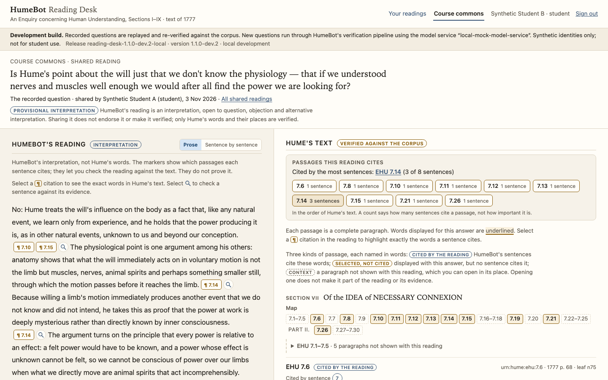
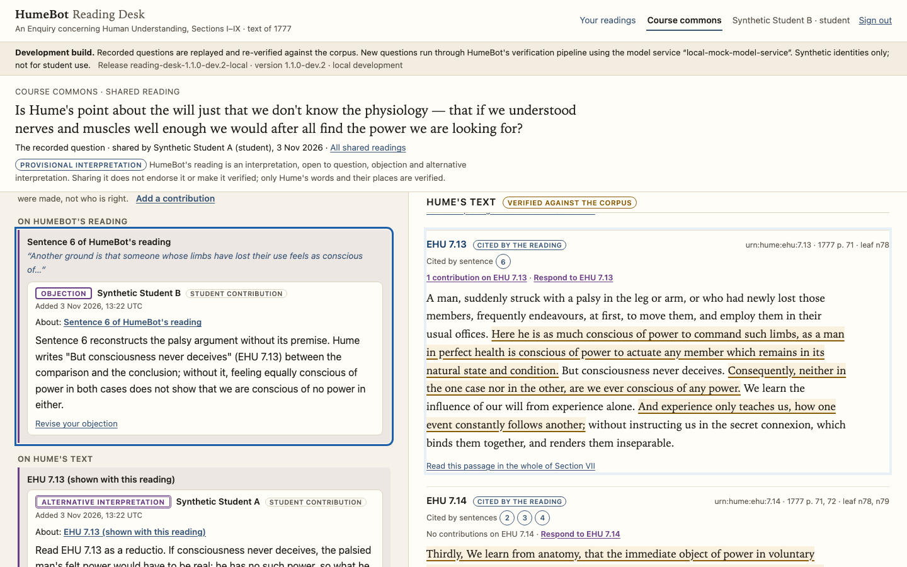
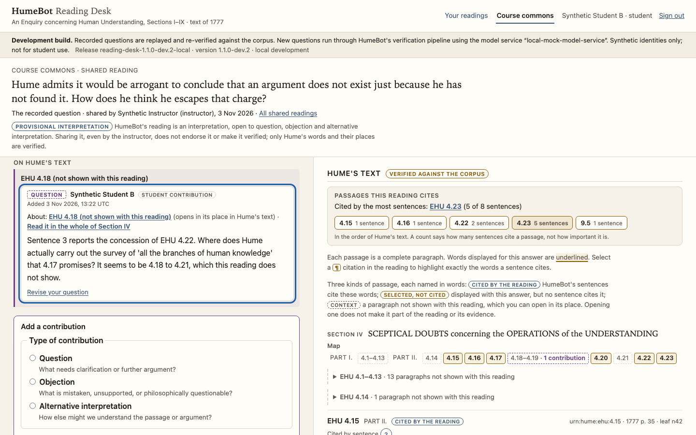

A faculty-led research project
HumeBot
Instructor-directed AI for evidence-accountable philosophical inquiry
HumeBot is a research project developing an AI-supported environment for reading, interpreting, and critically examining David Hume's Enquiry concerning Human Understanding.
Instructors direct the pedagogy. Interpretations—whether produced by instructors, students, or AI—remain answerable to the philosophical text and open to criticism.
Research prototype. HumeBot has not been deployed, and no student has used it. It is not an official University of Minnesota service.
Overview
Generative AI can produce fluent explanations of philosophical texts, but fluency is not the same as philosophical understanding. A model may misquote a passage, overlook an important argumentative relationship, or present a contested interpretation as settled. These limitations matter especially in philosophy, where learning to examine arguments and their textual foundations is central to the educational task.
HumeBot investigates a different approach. Its development prototype presents AI-generated explanations alongside verified passages of Hume's text, allowing readers to examine the evidence for themselves. It is designed to support philosophical teaching and inquiry, not to replace instructors, primary texts, or students' independent judgment.
The project builds on the Glass-Box AI Tutor, which places pedagogical decisions under instructor direction rather than delegating them to a language model.
HumeBot proposes to extend that principle to philosophical interpretation. Instructors could supply provisional reconstructions of arguments to guide explanations, while keeping those reconstructions visible, attributable, revisable, and open to student challenge.
That instructor-guidance capability remains a proposed research direction, not an implemented feature.
Research approach
Five commitments work together.
- A controlled text
- HumeBot works from a controlled pilot corpus: the Enquiry, Sections I–IX, in 216 textual units, transcribed from the public-domain 1777 edition. The project's engineering baseline has tested that this corpus can be rebuilt deterministically. A canonical corpus release, and several tasks that consolidate its archival provenance, are not yet finished.
- Deterministic citations
- The software, not the AI model, builds every quotation a reader sees, from the controlled text at a location that can be checked. Anything that fails verification is withheld rather than shown.
- Evidence-accountable explanations
- Each sentence of an explanation cites displayed passages, so that a reader can test it against the text. The software checks that every citation points to text actually displayed. It does not check that the passage supports what the sentence says: a citation locates the evidence to examine, and does not prove the interpretation.
- Instructor direction
- The instructor sets the course's objectives and its norms for engaging the text. The proposed next step, not yet built, is to present an instructor's own interpretations and reconstructions of arguments as course materials beside Hume's text and HumeBot's explanations. These would be attributed to the instructor, kept apart from Hume's text, and never treated as evidence for what Hume says. Whether such materials can reliably guide AI explanations remains a research question.
- Critical inquiry
- Readings are there to be examined, not simply accepted. Questions, objections and alternative interpretations can be attached to a particular sentence of a reading or a particular paragraph of Hume.
Four contributions, kept distinct
-
Built
Hume's text
What Hume wrote, and where, verified against the controlled corpus.
-
Proposed next step
The instructor
The framework that organizes a course, including provisional reconstructions. These would be attributed to the instructor and open to revision.
-
Development build
HumeBot's explanation
An answer to a particular question, anchored to the displayed passages. It is fallible, and labelled as interpretation.
-
Synthetic prototype
Students
Questions, objections and alternative interpretations, and eventually reconstructions of their own.
The existing prototype
Experimental, and not deployed. Everything described here runs only in a development environment, with synthetic identities and test or recorded data. No real student has used it. No version is qualified for classroom use.
-
Development software
The HumeBot harness
The harness answers a question in three stages:
- it works out what an adequate answer requires;
- it selects evidence from the text;
- it writes the explanation from that evidence alone.
It is not tied to one AI model. Development has used open-weight models and commercial frontier models; see Open-weight model research.
-
Release candidate · not deployed
The Reading Desk
A web application that shows HumeBot's reading beside whole paragraphs of Hume's verified text. It highlights exactly which words each sentence cites, and before displaying an answer it re-checks the answer's quotations, their locations and its citations against the corpus. Instructors get an evidence inspector showing which evidence was supplied for each answer, which was selected, and which each sentence cites.
-
Experimental · synthetic data only
The Course Reading Commons
A development feature for discussing readings within a course:
- A reader can deliberately share a verified reading with their course.
- Classmates and the instructor can attach questions, objections and alternative interpretations to particular sentences or paragraphs. These can include passages the reading left out.
- Contributions are attributed, and the prototype keeps a record of every contribution and moderation step.
- Nothing is ranked or voted on, and the instructor can moderate.
That record is how the prototype behaves, not an adopted policy. How long contributions are kept, how they can be deleted, how moderation works and what privacy protections apply must all be settled before any classroom use.
It has been exercised only with synthetic participants, and it is not ready for classroom use.
Research questions
The research asks how intellectual authority should be shared among instructor, student and AI, and whether that sharing can be made visible and accountable.
- Instructor-guided philosophical explanation. Does an instructor's reviewed, provisional reconstruction make HumeBot's explanations more faithful to the text and more intelligible as arguments? Can it do so without attributing the instructor's reading to Hume, and without bending the text to fit it?
- Interpretive fidelity and accountability. How can Hume's text, the course's reading, the model's explanation and a student's interpretation be kept distinguishable in every answer? And can a contested reading be presented faithfully while remaining genuinely open to challenge?
- Contestable reconstructions and student reasoning. When students can see, question and help revise reconstructions, does their capacity to reconstruct unfamiliar arguments for themselves develop? Answering this needs classroom research under institutional approval, which has not begun.
The longer-term educational goal is for students to progress from examining provisional reconstructions offered by instructors and AI toward developing, defending, and revising their own interpretations of philosophical arguments. This is a proposed pedagogical outcome, not an established result.
The first case is the instructor's own teaching of Hume's problem of induction (Enquiry IV–V).
- It begins with a careful philosophical conversation about that treatment of the argument.
- Only once that conversation has produced a reconstruction the instructor regards as faithful will the reconstruction be used to guide any explanation.
- Negative results will count as findings.
A distinct research direction. Open-weight model research asks whether a model that can be run on research computing and held fixed can meet these same textual standards, and what that would take.
Research update, November 2026
HumeBot's recent exploratory studies investigated how instructor-authored interpretations and educational objectives might influence AI explanations of Hume's problem of induction. Explicitly specifying philosophical tasks proved effective, while additional instructor guidance influenced framing and task selection without establishing improved explanation quality. The studies were small, and their outputs were evaluated by AI readers.
These findings support a distinction in HumeBot's development. Instructor-authored interpretations and argument reconstructions can be presented directly as attributed, contestable course materials, without requiring the language model to reproduce them. Research on reliably using instructor records to guide a language model's behavior remains open.
A development direction, not yet built. Presenting instructor materials in this way has not been implemented. The harness that writes HumeBot's current explanations does not receive instructor materials.
This is a normative pedagogical direction, not evidence of improved student learning or classroom readiness.
Demonstration
No public interactive demonstration is currently available. The Reading Desk runs only as a local development build, and it is not hosted anywhere that students or the public can reach.
Synthetic development demonstration. The screenshots below come from that development build. The course, its students and its instructor are synthetic, and the questions and answers are recorded development material, replayed and re-checked against the corpus. HumeBot's readings in them are its own interpretations and may be mistaken.
Select a screenshot to open it at full size.


Opens the full-size image.

Opens the full-size image.

Opens the full-size image.Research materials
- HumeBot publications. None yet. Public summaries and papers will be listed here once they have been completed and reviewed for release.
- The related project. The Glass-Box AI Tutor site publishes reports on that project's design, deployment and course adaptation.
- The text. HumeBot's corpus is transcribed from the public-domain 1777 edition of Hume's Essays and Treatises on Several Subjects. The project gratefully acknowledges Hume Texts Online, edited by Amyas Merivale and Peter Millican. Its scholarship informed the project, and HumeBot's passage identifiers follow its paragraph numbering.
Development status and future directions
Now: a Hume-specific research system
- Scope: Enquiry Sections I–IX.
- Built, as development software:
- the controlled pilot corpus;
- deterministic verification;
- explanations that keep Hume's text and HumeBot's reading apart;
- the three-stage harness;
- the Reading Desk release candidate;
- the synthetic Commons prototype.
- Demonstrated: exact citation in the experiments described. The software builds every displayed quotation from the controlled text and withholds what it cannot verify. That concerns whether quotations are exact, correctly located and anchored in the displayed text, not whether the cited passages support the interpretation. The figures establish exactness in these experiments; they are not a general guarantee of any model's performance.
- In a 24-question comparison in which both systems used the same open-weight model, the harness made no faulty citations in 89. The same model, strongly prompted and given the whole text, made 12 faulty citations in 51: 8 quotations not found in the passage cited, and 4 references to passages that do not exist.
- In a 60-question held-out study, all 238 of the harness's citations were exact and valid, and every one came from the evidence supplied for the answer.
- Not shown:
- that HumeBot interprets Hume better than a well-prompted model;
- that it improves learning;
- that any version is ready for classroom use. The October 2026 qualification attempt returned NOT_ELIGIBLE at its evidence-eligibility gate, before scholarly review. It established neither a pass nor a fail. No system is qualified for classroom use.
- Next: presenting instructor-authored interpretations and reconstructions as attributed course materials, the development direction described in the research update. It is not yet built.
Later: possibilities, not results
- A home for contestable reconstructions. The Course Reading Commons could hold instructors' and students' reconstructions as visible, versioned work, open to challenge.
- Other instructors, texts and interpretive traditions. Success with one instructor would not show that the approach works for others.
- A possible licensable, instructor-configurable application. This would raise its own questions: ownership of course materials, privacy, accessibility and support. It is separate from the research, and not established by it.
- Formal reasoning tools. Such tools would check the validity and consequences of formalizations that an instructor or student supplies. A valid formalization can still misrepresent the text. Automated reconstruction of informal arguments is a separate, exploratory question.
Nothing in this column is built or scheduled.
Contact and affiliation
Mark Collier, faculty leadProfessor of Philosophy, University of Minnesota Morris
mcollier@morris.umn.edu
Researchers, faculty colleagues and others interested in the project are welcome to get in touch.
HumeBot is a faculty research project. It is not an official University of Minnesota service, and nothing on this site should be read as University sponsorship or endorsement.